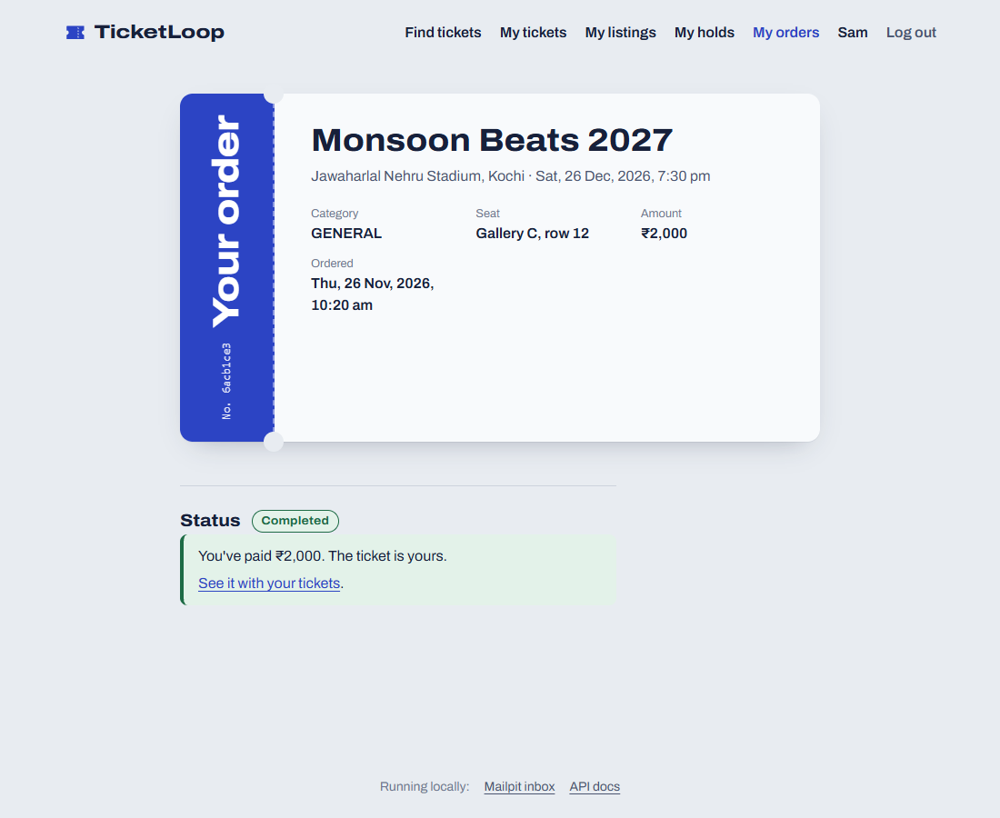
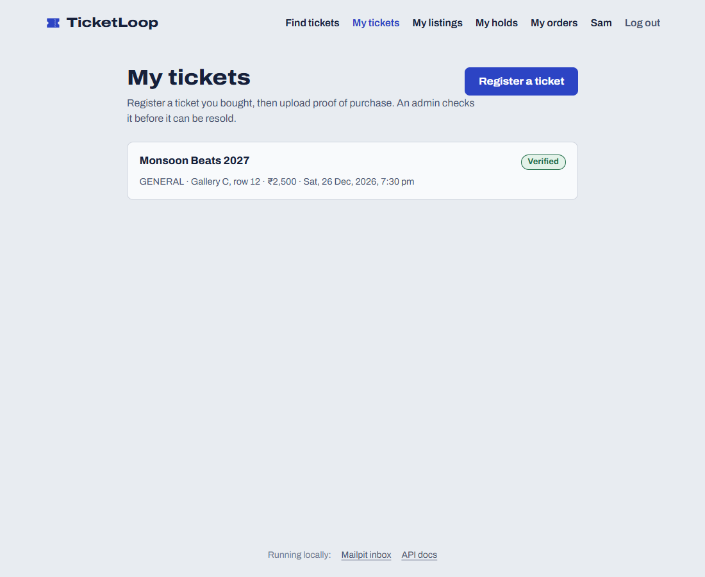
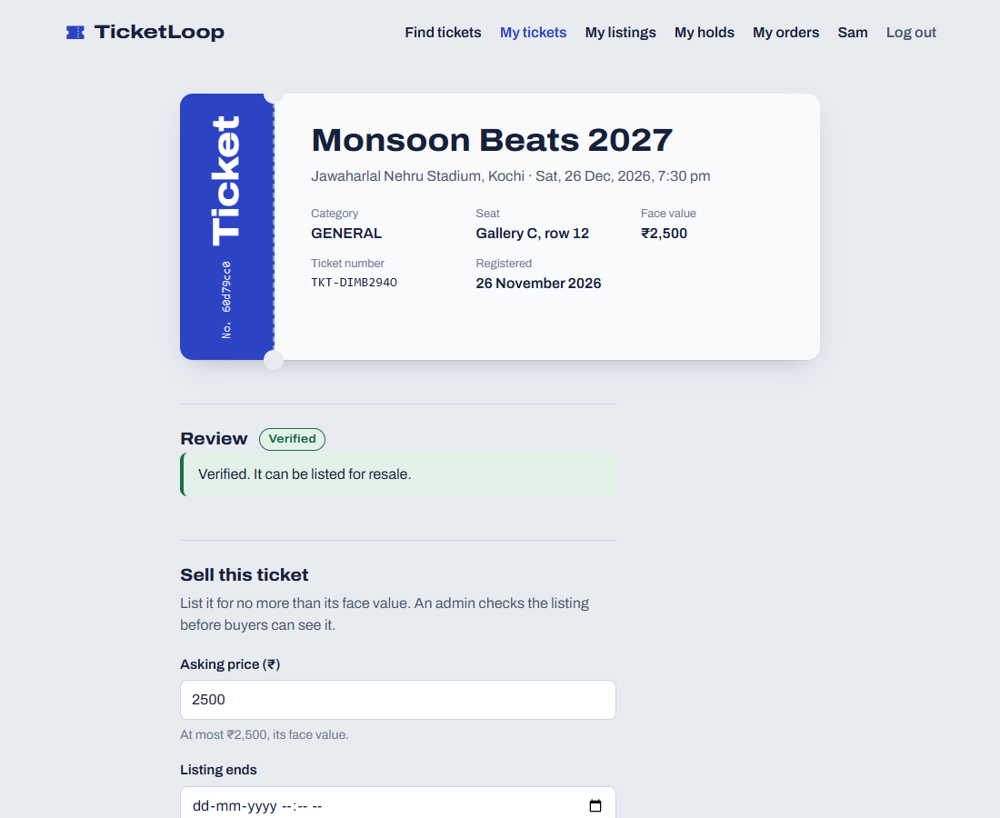
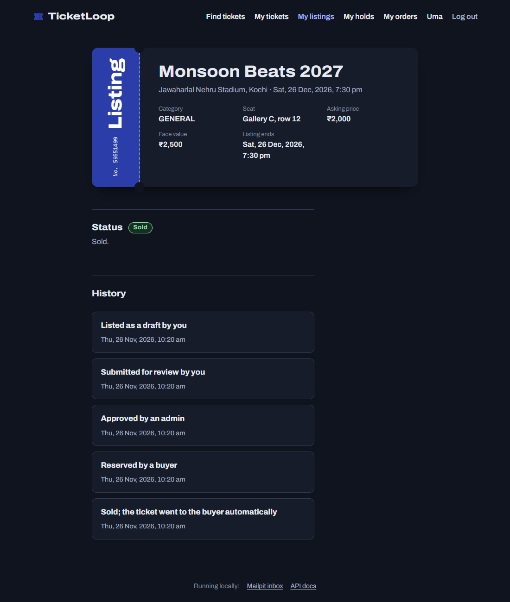

The 30-second answer
The order is marked paid and an outbox_events row is inserted in the same transaction. Either both happen or neither, so there is no moment when the money is taken and the event is lost. A relay picks unpublished rows with FOR UPDATE SKIP LOCKED, publishes each to RabbitMQ with publisher confirms, and only then marks it published. If the broker is down, the rows wait, with a growing backoff.
The relay can send a message twice, and RabbitMQ can deliver it twice, so every consumer writes a processed_events row in the same transaction as its effect. The second delivery finds the row and does nothing. Messages are acknowledged only after the task finishes, so a worker that dies mid-task gets its message handed to another.
The transfer itself is two steps with an event between them. The first creates it; the second commits PROCESSING, calls the ticket provider with no transaction open and the transfer's id as the idempotency key, then settles the answer. Busy is retried five times; a refusal or an unknown outcome goes to a person, because asking again could move the ticket twice.
What I built
- The outbox
emit()adds an event to the caller's transaction. Settling a payment and expiring a hold call it; nothing else can make an event exist.app/modules/outbox/service.py - The relayOne pass: claim up to 100 due rows, publish one task per consumer, mark them published. A refusal raises the row's
retry_count, sets its next attempt up to five minutes away, keeps the error, and ends the pass. It runs once a second in its own container.app/modules/outbox/relay.pyapp/workers/relay.py - Idempotent consumers
first_time()inserts(consumer, event_id)withON CONFLICT DO NOTHING. A second copy arriving while the first is mid-transaction waits on that row, then gets False.app/modules/outbox/service.py - RabbitMQ and CeleryThree queues,
transfers,notificationsandmaintenance, each with a dead-letter queue. Late acknowledgement, requeue when a worker is lost, prefetch of one, publisher confirms.app/workers/celery_app.py - The tasksThin wrappers. A consumer's answer becomes an acknowledgement, a delayed retry, or a rejection to the dead-letter queue. The work lives in plain functions the tests call directly.
app/workers/tasks.py - TransfersA state machine,
INITIATED → PROCESSING → COMPLETEDorREQUIRES_MANUAL_REVIEW, started bypayment.succeededand carried out bytransfer.initiated. Completing it moves the ticket, sells the listing and completes the order in one transaction.app/modules/transfers/service.pyapp/modules/transfers/state.py - The ticket providerA pretend one, in-process, that can succeed, be busy for a number of tries, refuse, or fail with an unknown outcome, and can be told to be slow. It remembers the keys it has seen and answers a repeat with the same reference.
app/infrastructure/external_providers/tickets.py - NotificationsA second consumer of the same events: paid, failed, hold expired, ticket received, ticket handed over, needs review. One per person per event, read through
GET /notifications.app/modules/notifications/service.pyapp/modules/notifications/router.py - BeatThe jobs that were scripts are scheduled now: holds every 30 seconds, listings every 5 minutes, reconciliation every 2. The scripts still run them by hand.
app/workers/jobs.py - The sweep for lost messagesEvery 2 minutes: a paid order with no transfer, or a transfer stuck half-way, untouched for 10 minutes and with nothing about it still in the outbox, has lost its message. It starts the transfer, or announces it again.
app/modules/transfers/service.py - ScreensThe order page follows the ticket to Completed and links to My tickets. The buyer's ticket page leaves out the seller's order number and proof. The seller's listing says Sold.
frontend/src/pages/OrderPage.tsxfrontend/src/pages/TicketPage.tsx
From Paid to the buyer's ticket
One webhook, five processes, and where each could die.
- 1Paid, and said so
The webhook's transaction moves payment, order and reservation, and inserts an outbox row
payment.succeeded. One commit. If the API dies a moment later, the row is there. - 2The relay publishes
It locks the row with
SKIP LOCKED, so a second relay takes different rows, sends a task totransfersand one tonotifications, waits for the broker to confirm both, and setspublished_at. Dies before the commit: the row is still unpublished and is sent again, whole. - 3The transfer is created
transfers.startclaims the event inprocessed_events, inserts the transfer, moves the order toTRANSFER_PENDING, and emitstransfer.initiated. One transaction. The message is acknowledged after the commit; dies between the two and the redelivered copy finds its row and stops. - 4The provider is asked
transfers.performcommitsPROCESSINGwith one more attempt, then calls the provider with no transaction open. Dies during the call: the transfer staysPROCESSING, the message comes back, and the provider is asked again with the same key. - 5The ticket moves
UPDATE tickets SET current_owner_id = buyer WHERE id = … AND current_owner_id = seller, the listing toSOLD, the order toCOMPLETED, the transfer toCOMPLETED, andtransfer.completedinto the outbox, together. If the update matches no row, it all rolls back and the transfer goes to review. - 6Everyone hears
The notifications consumer writes one row per person per event. The order page, which polls while the order is
PAIDorTRANSFER_PENDING, turns to Completed.
# app/modules/outbox/relay.py: nothing is published without a confirm
for consumer in CONSUMERS.get(event.event_type, ()):
publisher.publish(consumer, message(event)) # waits for the broker's ack
event.published_at = func.now()
# on PublishError: retry_count + 1, next_attempt_at = now() + backoff, stop the batchWhat each failure costs
- The broker is down. Payments still succeed. Their events wait in the outbox, retried 1, 2, 4 … up to 300 seconds apart, and go out when it's back.
- A message arrives twice. The second finds its
processed_eventsrow and is acknowledged with no effect. - A worker dies mid-task. The message was never acknowledged; RabbitMQ gives it to another worker.
- The database is down. The task retries for 5 to 10 minutes, then rejects its message to the dead-letter queue. Ten minutes after the order last changed, the sweep picks it up again.
- A message makes no sense. Rejected at once, to the dead-letter queue, instead of being retried for ever.
- The provider is busy. Five attempts, then review. Refuses, or nobody knows what happened: review at once.
Screens
Run docker compose up -d db mailpit minio fakepay rabbitmq worker beat relay, the API, and npm run dev in frontend/. Buy a ticket and watch the order page.
- Your orderPolls while the ticket is being handed over and turns to Completed by itself, with a link to your tickets.
/orders/:orderId - My ticketsThe ticket you bought, under your name now.
/tickets - The ticketWithout the seller's order number or proof of purchase: those were about the seller's purchase, and stay with them. It shows the face value, which is also the most it can be resold for.
/tickets/:ticketId - The seller's listingSold, and the history says the ticket went to the buyer.
/listings/:listingId




Decisions
Getting the event out
An outbox table
Instead of publishing from the request
Commit then publish loses the event if the process dies in between. Publish then commit announces a payment that may roll back. Writing it in the same transaction is the only order with no gap.
Polling with SKIP LOCKED
Instead of change data capture
Debezium and a Kafka Connect cluster to read one table is a lot of moving parts. A one-second poll is plenty, and two relays never take the same row.
Publisher confirms
Instead of fire and forget
Without them, "sent" means "handed to a socket". The row is marked published only once RabbitMQ says it has the message.
Stop the batch at the first failure
Instead of trying every row
If the broker refused one, it'll refuse the next 99. Each would wait out its own timeout and get a backoff it didn't need.
Doing it once
Dedupe in the consumer
Instead of exactly-once delivery
No broker can promise it across a crash. At-least-once plus a processed_events row in the effect's transaction is the same result, and it's checkable.
Acknowledge after the task
Instead of on receipt
Acknowledged on receipt, a message whose worker dies is gone. Acknowledged after, the worst case is a repeat, which the consumer already handles.
One task per consumer
Instead of one message everyone reads
Notifications failing must not make the transfer run again. Separate tasks retry separately and dedupe separately.
A sweep behind the queue
Instead of trusting the dead-letter queue
A message that gives up waits there for a person, and meanwhile the buyer's page says the ticket is on its way. The database knows what hasn't moved; asking it every two minutes costs one indexed query.
The transfer
Two steps with an event between
Instead of one task
With one task, a worker that died after creating the transfer would leave it INITIATED for ever: the redelivered message finds its processed_events row and stops. The second event makes the call its own unit of redelivery.
Commit PROCESSING before the call
Instead of a transaction around it
Someone else's slow call would hold my row locks and a pooled connection. And the commit is the record that an attempt was made.
The transfer's id as the idempotency key
Instead of a fresh key per attempt
The same key asked twice gets the same answer. A fresh key could move the ticket twice.
An unknown outcome goes to a person
Instead of retrying it
Retrying is safe only if the provider dedupes perfectly. I'd rather a person spend a minute than have code assume it.
Move the ticket only from the seller
Instead of an unconditional update
If the ticket's owner isn't the seller the transfer names, something outside this flow changed it. Rolling back and asking a person beats overwriting it.
Who sees what
The seller's proof stays with the seller
Instead of handing it to the buyer
The order number and the screenshots are about the seller's purchase from the venue. The buyer gets the ticket; an admin can still see the evidence.
last_error is for admins
Instead of showing it to the buyer
It's a provider's error string. The buyer is told it needs review, in words.
Interview questions
Answer out loud first, then open.
What is the transactional outbox pattern?
Instead of publishing a message from the request, I insert a row into an outbox_events table in the same transaction as the change. A separate relay reads unpublished rows, publishes them, and marks them published. The change and the intent to announce it commit together, so neither can exist without the other.
What does that guarantee, and what doesn't it?
At-least-once: every committed event is published eventually. Not exactly-once. The relay can publish and die before marking the row, so the same event may go out twice. That's why every consumer dedupes.
How do your consumers dedupe?
A processed_events table keyed on (consumer, event id). The consumer inserts its row with ON CONFLICT DO NOTHING in the same transaction as its effect. If the insert returns nothing, it's a repeat, and the consumer stops. A copy that arrives while the first is still running blocks on the uncommitted row, then sees it.
Why late acknowledgement?
So a crash means redelivery, not loss. A message is acknowledged after its task finishes. If the worker is killed, RabbitMQ never got the ack and gives the message to another worker. Combined with dedupe, the worst case of a crash is doing nothing twice.
What happens when RabbitMQ is down?
Payments carry on. Each one leaves an outbox row. The relay's publish fails, the row's retry_count goes up and its next attempt moves out, doubling up to five minutes, with jitter so a thousand rows don't all retry at once. When the broker is back they all go out. I tested it with 10 orders paid while it was unreachable: all 10 published and transferred once.
How do you call the external provider safely?
Commit that I'm about to try, with the attempt count. Call with no transaction open. Save the answer in a new transaction. The transfer's id is the idempotency key, so if I die during the call and the message comes back, asking again returns the same reference instead of moving the ticket again.
Why not retry an unknown outcome?
Because it may have worked. A timeout after the request was sent is exactly that. With a perfectly idempotent provider retrying would be fine; I don't want correctness to rest on that, so it goes to manual review.
What's a dead-letter queue for?
A message that will never succeed: a malformed payload, or a fault that outlasts its retries. Rejected without requeue, RabbitMQ moves it to transfers.dead instead of looping. A person reads it, fixes the cause, and moves it back.
You have two relays. What stops them sending the same row?
SELECT … FOR UPDATE SKIP LOCKED. Each takes rows the other hasn't locked. And if they somehow both sent one, the consumers would dedupe it.
How do you know any of this works?
Drills, as tests, against real RabbitMQ and real worker processes: stop the broker and pay; kill a worker while the provider is slow; send a poison message. And unit tests for every way a task can end: done, retry, give up, reject.
Why is the transfer two consumers?
If one task created the transfer and called the provider, and the worker died after the first commit, the redelivered message would find its dedupe row and stop, and the transfer would sit there for ever. The second event makes the provider call redeliverable by itself.
And if a message is lost anyway?
It can be: a database restart longer than a task's retries sends it to the dead-letter queue. So the queue isn't the only record. Every two minutes a job asks Postgres for paid orders with no transfer, and transfers still half-way, that nothing has touched for ten minutes and that have no event still waiting in the outbox. It starts or re-announces each one. Both steps are idempotent, so being wrong about "lost" costs a repeat, not a second transfer.
What does the buyer see when it goes to review?
The order page says they've paid, that the ticket couldn't be transferred, and that we're looking into it. The listing stays RESERVED, so nobody else can buy it; and both people get a notification. Refunds are out of scope here, so that's where it ends.
Traps and fixes
- Notifications in the wrong order. Several written in one transaction all had the same
now(), so their order was chance. They default toclock_timestamp()now, which moves within a transaction. - An insert that said it inserted −1 rows. SQLAlchemy reports
rowcountas −1 for an ORM insert withON CONFLICT, so "did I write it?" was always yes. It asks withRETURNINGnow. - Tests that ate the development worker's messages. A test and a running worker shared the broker and the queue names. Every queue and exchange now takes a
QUEUE_PREFIX; the drills delete theirs afterwards. - Every log line twice, and some not as JSON. Celery redirected stdout to its own logger, which our logging also wrote to. Our setup now replaces Celery's, through its
setup_loggingsignal, in the worker and in beat. - The buyer could see the seller's proof of purchase. After the sale, the buyer owned the ticket, and owning it was what the evidence routes checked. Now they check who registered it.
- A secret in my shell broke the tests. A
FAKEPAY_WEBHOOK_SECRETin the environment overrode the one the tests sign with. The tests pin their own. - A paid order stuck for good. The review found it: a database restart of more than half a minute used up a task's retries, its message went to the dead-letter queue, and the order stayed being handed over for ever. The retries now last 5 to 10 minutes, and the sweep picks up whatever is left.
- A transfer that could ask the provider for ever. A call that kills its worker is delivered again, and again; each delivery asked once more. After five tries it goes to review now.
- A worker that gave up stayed down. Celery exits after its last attempt to reach the broker. The worker, beat and relay restart by themselves now.
- The buyer's ticket said they'd paid ₹2,500. They'd paid ₹2,000; ₹2,500 was the face value the seller registered. It's labelled Face value now, which is also the resale cap.
- A test that passed by being quick.
getByRole("heading", {name: "Ticket"})matches by substring, so once Sell this ticket loaded it matched two headings. It passed only when it looked first. It's exact now.
Known gaps, on purpose
- Manual review is where it ends. There's no admin screen to retry or refund a transfer; refunds were cut from the roadmap.
- No screen for notifications. They're in the API, and the order page already says what happened.
- The provider is pretend. In-process, with switches for its failures. A real one would be a client like fakepay's, with its own callbacks.
- No trace across the hop yet. The outbox has a
headerscolumn for it; M11 fills it.
Check it still works
docker compose up -d db mailpit minio fakepay rabbitmq worker beat relay
uv run alembic upgrade head
uv run pytest tests/integration/test_outbox.py tests/integration/test_transfers.py
uv run pytest tests/integration/test_notifications.py tests/unit/test_workers.py
REQUIRE_BROKER=1 uv run pytest tests/concurrency/test_messaging.py # the four drills
docker compose logs -f worker relay # JSON, one line each
REQUIRE_POSTGRES=1 REQUIRE_STORAGE=1 REQUIRE_BROKER=1 uv run pytest # 1109 tests, what CI runs
cd frontend && npm run dev # localhost:5173
npm test # 149 unit tests
npm run e2e # 20 browser tests; the purchase now ends Completed
gh run list --workflow ci.yml --limit 3